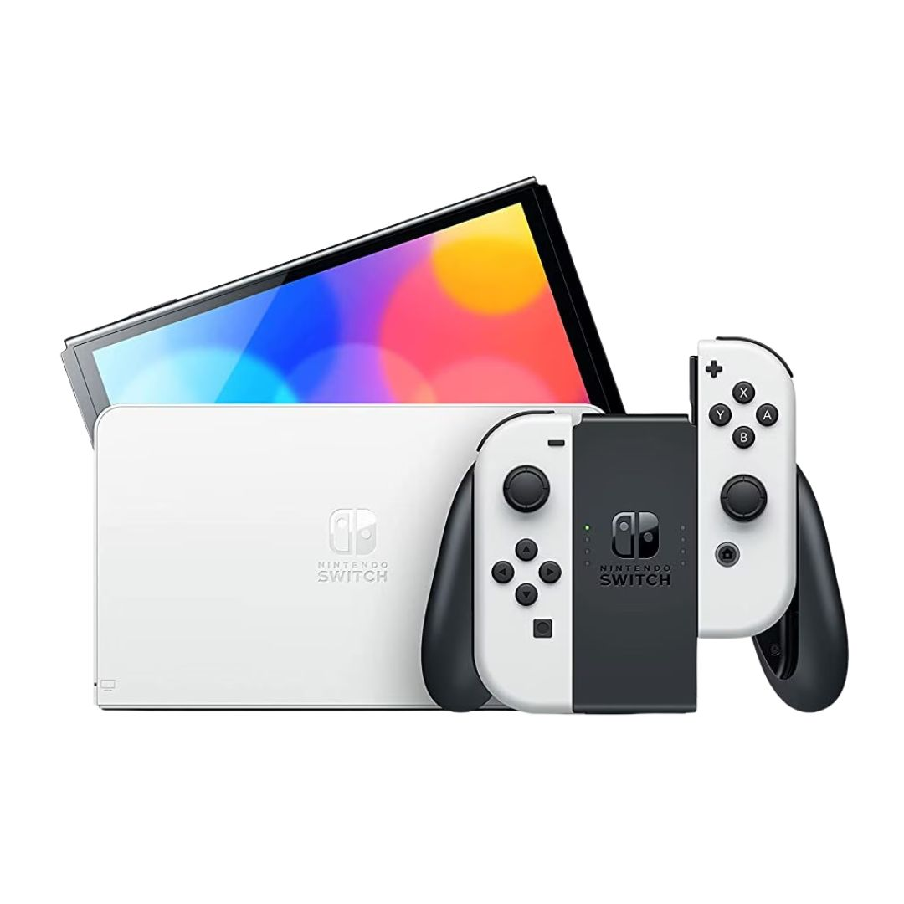
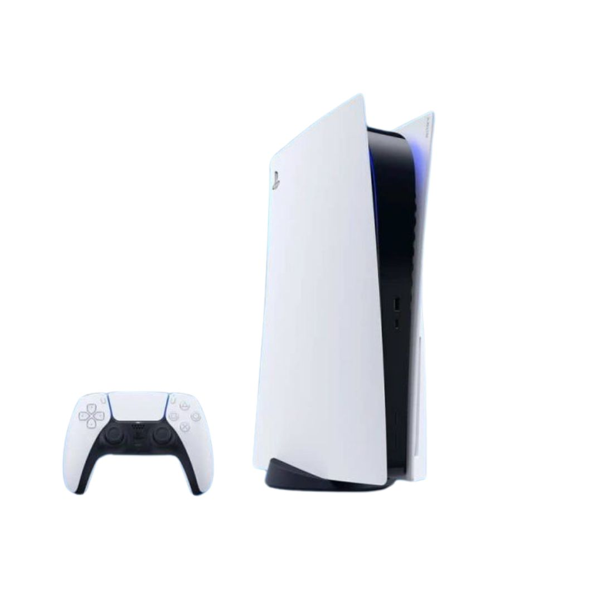
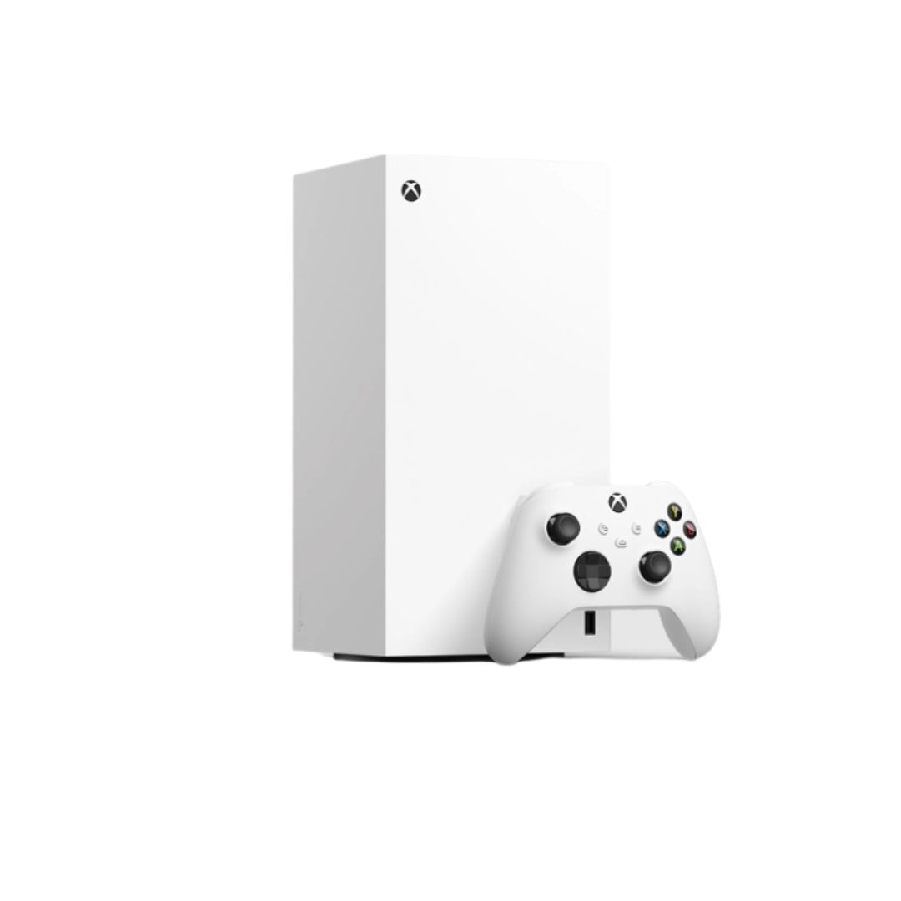

Game Decider
Game Console




Latest News
PlaySide Studios, Australia’s largest video game developer, is laying off developers as part of a restructure to save $2.5-$3.1 million. The layoffs, primarily impacting work-for-hire and non-project specific staff, are a result of a prolonged period without new contract signings.
Starbreeze appoints Adolf Kristjansson as its new CEO, effective April 1, 2025. This comes after financial underperformance, layoffs, and the closure of its French office, which is violating French labor laws.
Overtake, a new NA esports organization founded in February 2025, have announced their entry into the NA Counter-Strike 2 scene on March 26th with the signing of a roster that previously represented CCG in ESEA Advanced Season 52. Alongside their new CS2 team, Overtake also hosts squads in Fortnite and Call of Duty.
Ubisoft Leamington Spa has officially closed its studio doors, following confirmation from Ubisoft back in January that the studio would be shutting down. Originally founded as FreeStyleGames in 2002, the Leamington Spa team was the oldest game studio still operating in the area and one of the oldest game studios to be based in Leamington. FreeStyleGames began as an independent team before being acquired by Activision in 2008, where it led the development of DJ Hero, DJ Hero 2, and Guitar Hero Live. After being acquired by Ubisoft in 2017, the studio mainly ran support on big Ubisoft titles and franchises, from Tom Clancy to Far Cry, all the way up to the recently released Assassin's Creed Shadows.